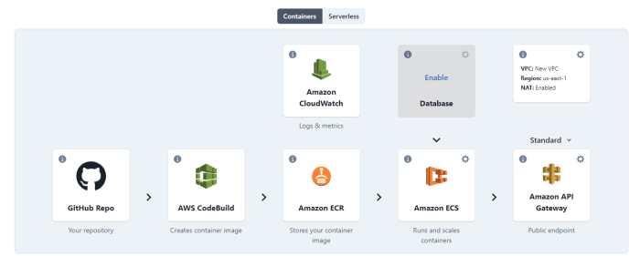
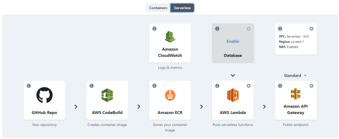

Architecture
When you create a new stack with TinyStacks, we stand up a number of resources in your AWS account. This section describes how each AWS resource fits into your stack, as well as the average costs for each AWS resource.
The role of containers
A Docker container is a lightweight virtualized operating system that runs on top of other operating systems such as Linux or Windows.
Before Docker, deploying applications at scale was fraught with difficulty. To run successfully, an application requires the correct configuration - the right version of its programming language runtime, shared libraries, and local state (environment variables, file system permissions, etc.). But system administrators were often forced to deploy applications across multiple servers with mismatched configurations.
Docker simplifies deployment by packaging an application in a virtualized operating system that contains everything the application needs to run successfully, virtually eliminating the dependency issue. Once an application is verified to run successfully in its container, you can deploy as many running copies as you need to support your users at scale. You can also avoid bloat by shipping the application with exactly the dependencies it needs and nothing more.
Two ways to run your application
TinyStacks stores your built application as a container in Amazon Elastic Container Registry (ECR). Storing your Docker images in Amazon ECR makes it easy to deploy running instances of the image. It also provides a historical repository of images that simplifies version rollback.
From there, you have a choice as to how to deploy your application.
Serverless
A "serverless" application is one that doesn't require you to provision computing resources (such as Amazon EC2 instances) in your own AWS account. Instead, AWS simply takes your code (in this case, packaged as a Docker container) and runs it on an available computing instance that it maintains for you behind the scenes.
TinyStacks serverless stacks run your application using AWS's original serverless technology, AWS Lambda. Serverless is a great option for pre-production stacks (dev stacks) as well as for production applications with bursting usage patterns - i.e., apps with punctuated periods of high and low activity.
For more information, see Serverless.
Elastic Container Service (ECS)
ECS is a container orchestration service that enables running Docker containers quickly and easily. Containers can be run on a set of virtual machines (a cluster) that you run and manage in your own account. Alternatively, they may be run using AWS Fargate, a serverless component of Amazon ECS that runs containers on computing capacity managed by AWS. For most deployments, TinyStacks manages its own ECS clusters on behalf of our customers.
For more information on how to control cluster configuration and scaling, see Compute.
Architectural components
A stack consists of an application written on a specific application framework (such as Express, Flask, Django, Spring, etc.) packaged inside of a Docker container. TinyStacks creates the necessary architecture inside of your AWS account to run this Dockerized application in a scalable and highly available architecture on AWS.
The following diagram shows the major architectural components in a stack for a container architecture:

Following are the components used for serverless architectures:

GitHub. A source code repository application based on the source control program Git. Stores the code for your application as well as some ancillary files needed in the stack deployment process. (TinyStacks also supports using GitLab as one’s repository.)
AWS CodePipeline. A continuous integration and continuous deployment service. Responsible for coordinating the build and deployment of the Docker container.
AWS CodeBuild. A managed continuous integration service that builds source code into deployable applications. Comprises the steps in the CodePipeline.
Amazon Elastic Container Registry (ECR). Docker container storage service. Stores the Dockerized version of the application.
Amazon Elastic Container Service (ECS). Docker container orchestration service. Runs the latest version of the application.
AWS Lambda. Serverless execution technology for running code directly in the AWS cloud without standing up compute directly in your AWS account.
Amazon CloudWatch. Amazon’s metrics, monitoring, and alerting service. Provides some basic alerts around application health and build/release status.
Amazon API Gateway. A service for creating managed Application Programming Interfaces (API) at scale. Creates endpoints to the API functions defined by the application residing in the Docker container.
Amazon Application Load Balancer. An alternative to API Gateway that is more suitable for applications serving over one million requests/month.
Networking
AWS resources run in virtual networks called Virtual Private Clouds (VPCs). TinyStacks builds its own VPC for your application that is secure by default. Alternatively, you can use your own VPC that already exists in your AWS account, assuming it meets certain criteria.
For more information, see Networking.
Application flow
GitHub stack creation
When you create a new stack in TinyStacks, you can choose whether to use a starter project or use an existing project already defined in your GitHub account.
When you use a starter project, TinyStacks creates a new repository in your GitHub account that contains a basic Create/Read/Update/Delete (CRUD) data application with a handful of REST API endpoints. It also creates two YAML files that are used by TinyStacks for the AWS CodePipeline portion of the deployment:
build.yml. Builds the Docker container and pushes it into the Amazon ECR instance. release.yml. Updates the running service in your Amazon ECS cluster.
If you use an existing GitHub project, you will need to find the build.yml and release.yml files in the relevant TinyStacks template in Github and check them into your existing Github repository.
For more information, including information on how to manage "monorepos" (repositories containing multiple releases and multiple build/release files), see Builds and Releases.
Continuous Integration with Code Pipeline
Your GitHub repository is connected to an AWS CodePipeline project. TinyStacks uses AWS CodePipeline to enable:
- Continuous integration, which ensures that your project is always built, packaged, and ready to be deployed.
- Continuous deployment, which deploys the latest package of your running project into the target environment.
When you create a stack, you specify which branch of your GitHub repository you wish to connect to your AWS CodePipeline project. Whenever you commit a change to this branch, an AWS Lambda function does a full clone of the repository, creates a new ZIP file for the application, and uploads it to an Amazon S3 bucket. This change to the key in Amazon S3 triggers AWS CodePipeline to build and deploy your latest changes.
Pushing changes to Amazon ECR and Amazon ECS
Your running application is hosted in Amazon ECS using an image stored in an Amazon ECR registry. TinyStacks creates both of these resources for you when it stands up your stack.
Your ECS configuration consists of the following building blocks:
An ECS cluster, a collection of virtual machines on which containers are run. TinyStacks manages its own ECS clusters on behalf of our customers’ deployments. A task definition that specifies the container to run for your service. One or more running tasks, which correspond to a running instance of your container. A service, which ensures that a set number of running tasks are always accepting requests. By default, TinyStacks creates a single task for your service. However, this may be increased automatically up to five running tasks if your API is subject to high demand. (See below for more information on auto scaling.)
Deployments through ECR and ECS are driven by your AWS CodePipeline project. This project contains two AWS CodeBuild projects:
- Build (specified by your project’s build.yaml file). The Build project runs first and compiles a new Docker image containing your application’s latest changes. It then pushes this new image up to the Amazon ECR container repository that TinyStacks created for your project.
- Release (specified by your project’s release.yml file). After Build has run successfully, the Release project downloads and re-labels the current image pushed by the Build project to Amazon ECR. It then updates the running task definition on your Amazon Fargate cluster to ensure that your application is using the latest image.
The output of both of these projects is available in the AWS CodePipeline console. TinyStacks also stores this output in Amazon CloudWatch Logs.
Managed API endpoints
By default, your Amazon ECS container is hosted on an instance in a public subnet. However, the instance itself does not have a public IP address. TinyStacks uses Amazon API Gateway or Application Load Balancer to provide a publicly accessible endpoint onto your container’s REST API methods.
Amazon API Gateway provides you with fine-grained control over your REST API with support for configuring authorization, usage throttling, and advanced request routing, among other features. Application Load Balancer also provides routing support in addition to balancing requests across resource targets to avoid overwhelming any single resource.
When you create a stack, you have a choice to use either API Gateway or Application Load Balancer. For more details on the differences, which to choose, and how this effects your application, see Load Balancers.
Amazon CloudWatch for auto scaling
TinyStacks uses Amazon CloudWatch to set up metrics and alerts to help scale out and scale in your application in proportion to the traffic it's receiving. For more information, see Autoscaling.
Cost of a TinyStacks stack
Note: Prices based on pricing of services in the US East (Virginia) data center as of July 2021. Pricing is subject to change without notice. Prices do not include any relevant taxes.
The TinyStacks stack is designed, not just for reliability and scalability, but for cost-effectiveness as well. We estimate that running a typical stack in a development capacity will cost around $46 per month.
Note that your actual costs may vary based on a couple of factors:
- Free Tier. If you have a new AWS account, you can consume a set amount of key AWS services for free every month for the first 12 months of your account’s lifetime. If you exceed the free tier limits, you will incur additional charges and your costs will exceed those documented here.
- Usage. The estimates cited above assume light usage in a development/test environment. High-volume, production applications will incur higher costs.
As end user usage of your application increases, costs will increase concomitantly. This is because the cloud services that support your application will automatically scale up and out to meet the increased demand, thus using additional computing resources. The two factors driving costs are the amount of traffic your application handles and the number of virtual machines required in your Amazon ECS cluster.
Traffic costs
TinyStacks supports both standard scale (using Amazon API Gateway) and hyperscale (using Application Load Balancer) configurations. Your costs will scale differently on each configuration as your usage increases. In general, a hyperscale configuration will prove more cost-effective at a volume of 500,000 or more application requests per month.
In a standard scale application, API Gateway costs will increase by around $1 for every additional million requests your application handles.
In a hyperscale application, your costs will vary based on the number of Load Balancer Capacity Units (LCUs) your application consumes. LCUs are a complex metric, with a single LCU providing the following resources:
- 25 new connections per second
- 3,000 active connections every minute
- 1 GB of data sent to the Amazon EC2 instances in your Amazon ECS cluster
- 1,000 rules evaluated every second
If your application exceeds any of these resource limits, you will pay for another LCU at a cost of around USD $0.008 per hour. You will pay for the largest number of LCUs required to accommodate your most demanding resource.
For example, say that your application is receiving an average of 10,000 new connections every minute and is processing 3 GB of data every hour. In this instance, three LCUs would be enough to cover 3 GB of data. However, you will need 6.68 LCUs to cover 10,000 connections every minute (around 167 connections/second). According to the AWS Pricing Calculator, this would bring your LCU charges in us-east-1 up to around $40/month.
Note that, in the above example, an application using API Gateway would be serving around 432 million connections per month for a total additional cost of $432/month. This makes it clear how much more economical it is to use Application Load Balancer when running at hyperscale.
Amazon ECS cluster costs
All Docker containers are hosted in an Amazon ECS cluster in your AWS account. An ECS cluster contains one or more instances of an Amazon EC2 virtual machine. By default, Tinystacks runs once EC2 instance in your cluster. As demand on your application grows, we will scale out and create a new cluster instance when the average CPU utilization across all cluster instances exceeds 70% for five minutes or longer.
You can configure what instance size to use for your application when you create your stack. For standard scale applications, the t3.micro size is a good starter size that will limit your AWS spend (t3.micro instances will only run around USD $8/month). For hyperscale applications serving over 1 million requests/month, select m3.medium or m3.large depending on how CPU-intensive your workload is.